Man, is Utah hot.
Today is the first day we've experienced some sub-100-degree weather in the daytime since we left my dad's house a few weeks ago. Hiking in the desert is challenging, rewarding, and just so... damn... hot.
From the Coachella Valley we headed northwest into Mojave National Preserve, camping at the base of the Kelso Sand Dunes. The next morning, we hiked to the top of the largest dune.

Over 800ft of prominence. When it's sand, that's a lot more than it sounds.
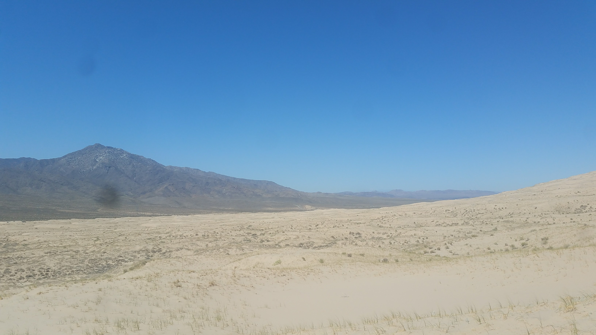The view from the top.
At the top, we met a fellow adventurer who gave us some words of advice regarding our next destination: Zion National Park! We also joined him in running down the dunes, which was both awesome and created a phenomenon unique to a small number of dunes around the world: "singing dunes", which is a strange boom sound created as the upper layers of fine sand rub across the coarser, older sands below.
Before we left Mojave, however, we explored an ancient lava river that cut across the desert, and even ventured down into a lava tube recommended to us by our trip buddy, TToggs.

The treasure was buried in this chamber, obviously.
After Mojave, it was crossing back through Vegas (we just passed the strip this time), before arriving in St. George, Utah a few days later. St. George was a weird, half-bougie Mormon town, home to a few universities and the only real city in southern Utah. After having some much-needed showers, we descended upon Zion Canyon.
Well technically, first we went up into the Kolob Canyons, 1000ft above Zion, and did some hiking there. But they're in Zion NP, so it counts right?
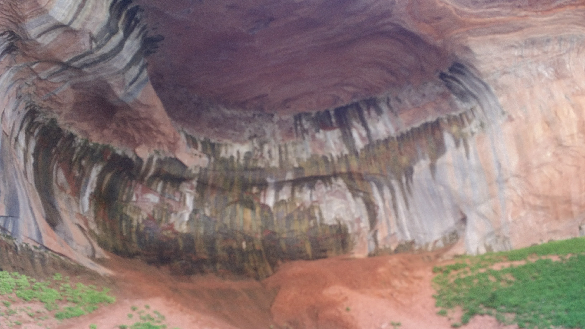Double Arch Alcove, in Kolob Canyons
BUT THEN we went into Zion Canyon! Our first adventures in the canyon were to the Emerald Pools, the upper pool was under an incredible 2000ft sandstone alcove that was inhabited by hundreds of rock wrens and other birds. The pool itself was beautiful and shady, and didn't even feel like it was in a desert. We were harassed by some very conditioned squirrels. Don't feed the wildlife!
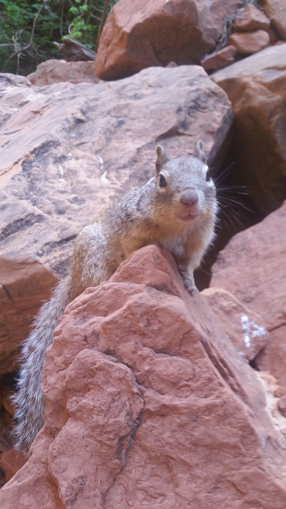It's so tough to say no to that face, though!
After the Emerald Pools was Weeping Rock, a giant porous sandstone alcove that... you guessed it, weeps water from its countless cracks and pores. The next day we were planning on hiking Angel's Landing, a massive column overlook in the middle of the canyon. But we were so fortunate to get last minute passes to one of Zion's most desired (and incredible) backcountry hikes: the Subway!
 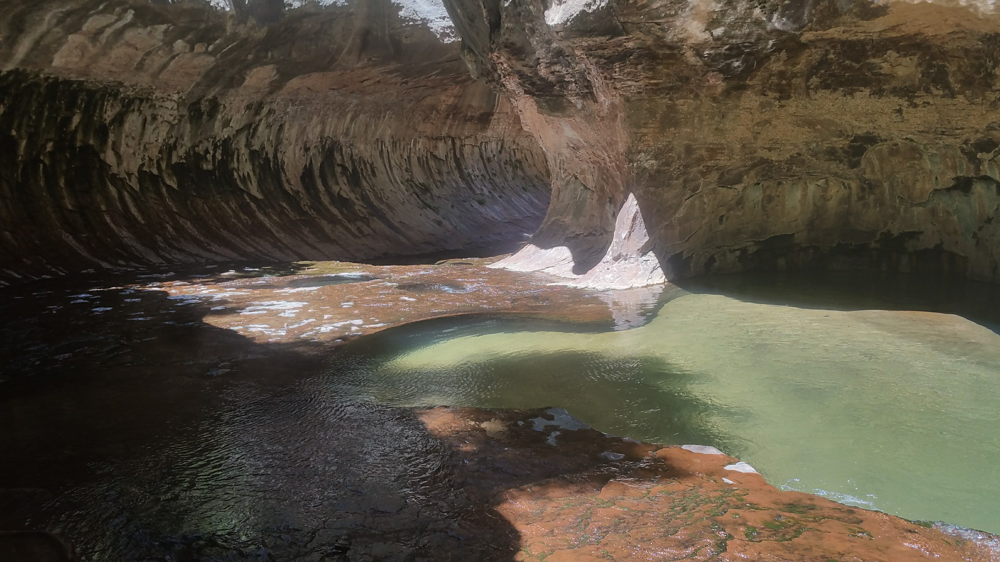
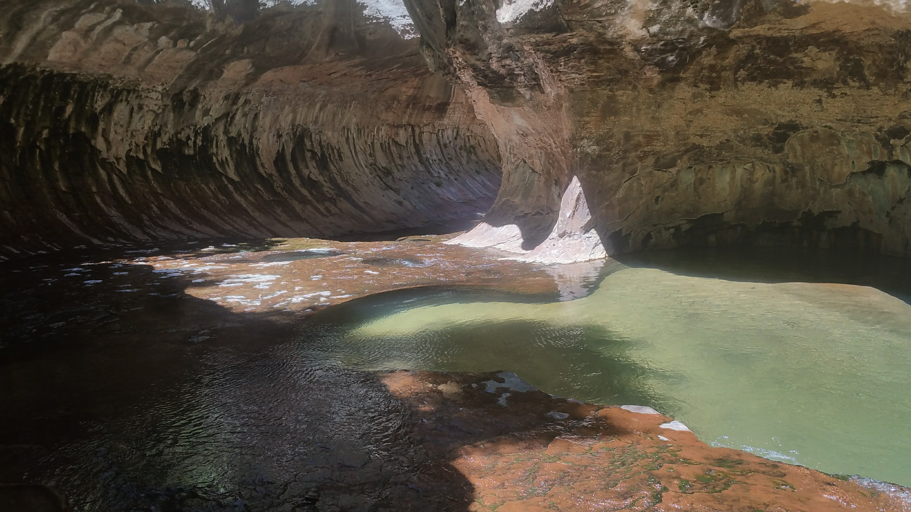
Technically the Left Fork of North Creek, this hike traverses some 4 miles of creek (yes, you're hiking IN the water) before you arrive at this incredible tunnel-like formation that gave the hike its social name.
After swimming in the waterfall pool at the end of the hike, and chatting with some fellow hikers (they were very envious of our last-minute reservations, you normally need to book more than 3 months in advance), we traveled back down the river. We then spent the evening back in St George, showering once again (you sweat A LOT when it's over 110F outside. Who knew?). But the next day we were back to hiking in rivers, this time doing the Virgin River Narrows.
 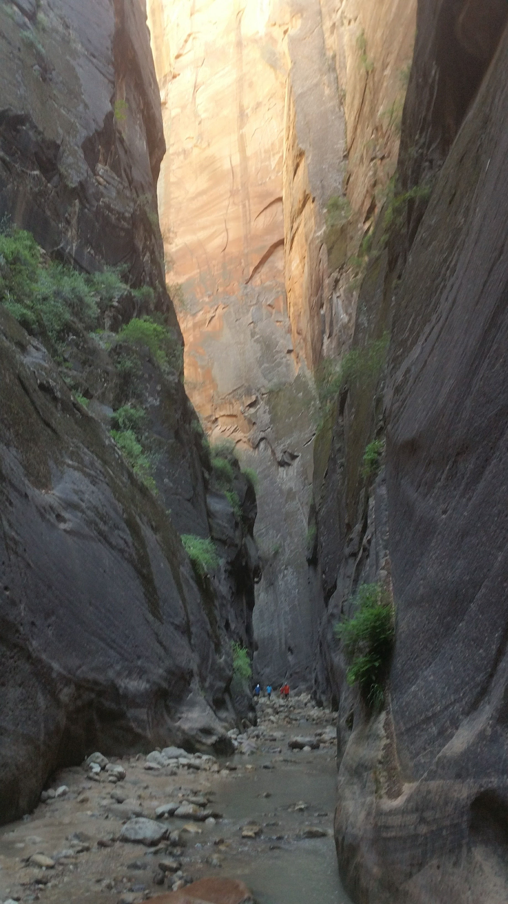
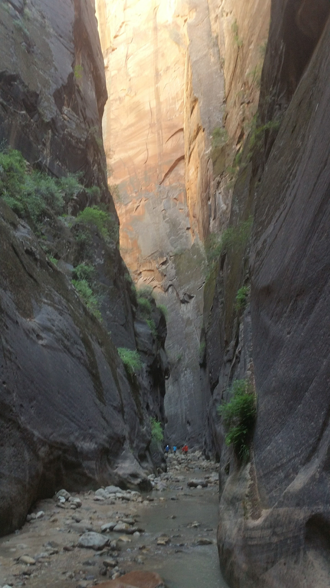
Appropriately named, no?
Prior to hiking the Narrows, we met a traveling photographer on the shuttle named Johnny. Johnny was working on a cool project: documenting people like us, travelers living out of cars/vans/buses! He asked if we were interested in being in his project. Duhhh. We scheduled to meet Johnny later in the week for that very purpose. You can check out Johnny's portfolio here. And when we were in the Narrows, we made friends of a fellow adventuring couple, Arrow and Robin! They were roadtripping from Arizona up to Portland, OR, and beyond into Canada. We hiked the Narrows with them before getting beers at the nearby Brewpub that evening. It was so wonderful to meet kindred spirits in such a magical place. We invited them to come visit us in Mass someday!
The next day we ended up meeting Johnny out at our campsite to take photos. It was a cool experience with a very cool friend, and we ended up going out to get pizza with him afterwards. He even let us crash on the floor of his hotel! It was incredible to sleep in some air conditioning for once.
Now it was time for us to hike Angel's Landing. We got up early so we would beat the sun, and beat it we did (it was still hot as sin). The climb to the Landing traverses some crazy-thin precipices, where some chains drilled into the rock are the only thing between you and a multi-thousand-foot fall. But the view was worth it.
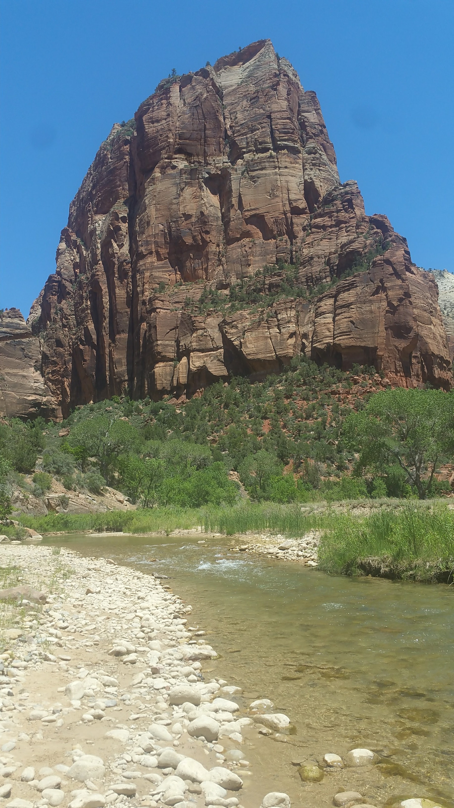From the bottom
 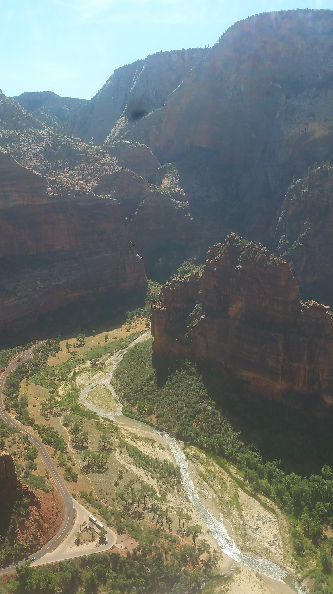
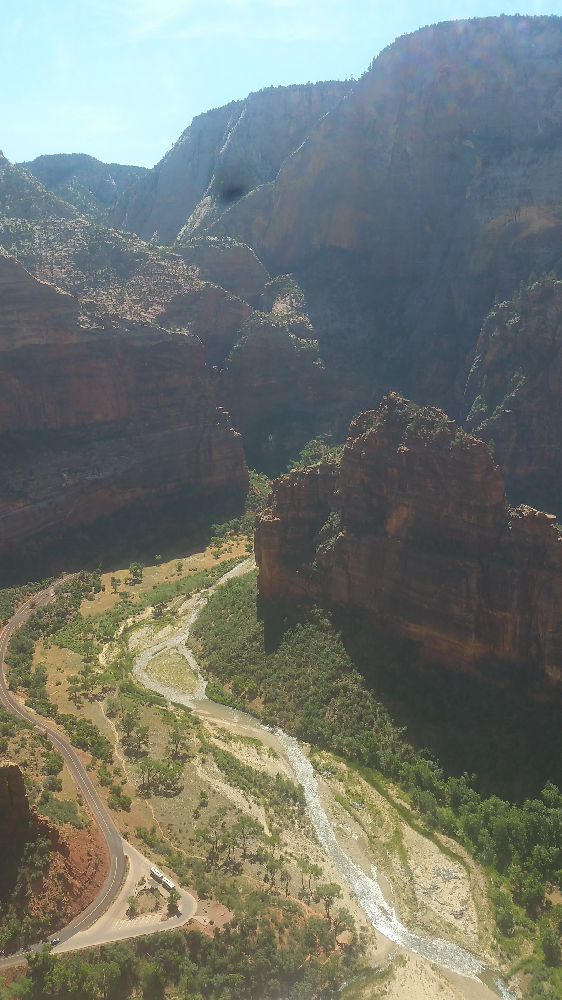
Helllooooo down there!!
After the Landing it was "goodbye Zion Canyon" and hello civilization for awhile. A decent while, in the context of this trip--Lacey's phone would no longer turn on, and so we needed to hang out in St. George for a few days while Verizon shipped her a new one. But hey, the weather was above 120 degrees more than a handful of those days, so we weren't really complaining. I made a few synthwavey songs, and we found some bismuth!!
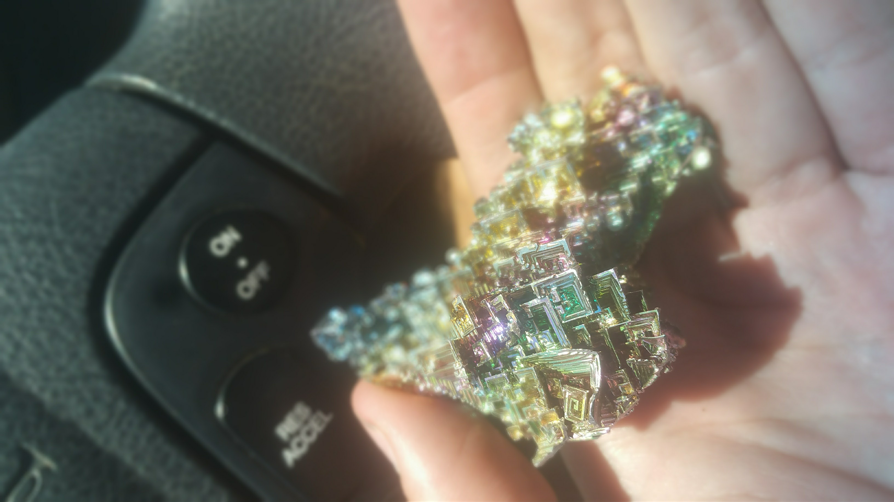The most incredible mineral. I'm so in love with this piece.
Functioning cell phones in tow, we then headed south to return to a place we had not been in over 5 months: the Grand Canyon. This time, however, we were going to the North Rim! The North Rim is about 1000ft higher than the South, and is inaccessible most of the year. It's also just... real far from everything, which means it doesn't have anywhere near the same crowds as the South. It was beautiful and serene.
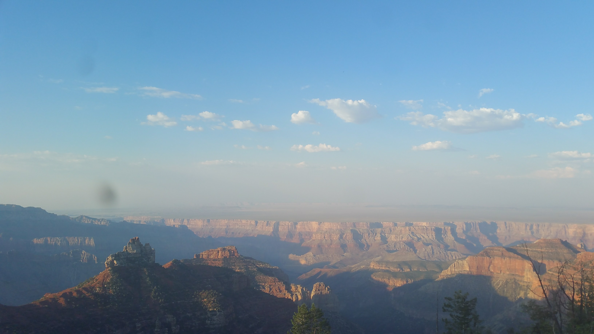
The Angel's Window

Pretty lady takes in the view.
After hiking along and near the rim, and feeding some "squaws," we then struck out for a place we had been talking about since we were last in Arizona: SoSoBa, the NonStop Noodle Shop!!! We took a nearly 3 hour detour for these noodles, but let me tell you: it was worth every second. That place is one of the greatest restaurants either of us have ever visited. We spent the night sleeping in the National Forest that surrounds Flagstaff, something we were unable to do last time we were in the city.
Something else that we didn't do, was check out Horseshoe Bend.
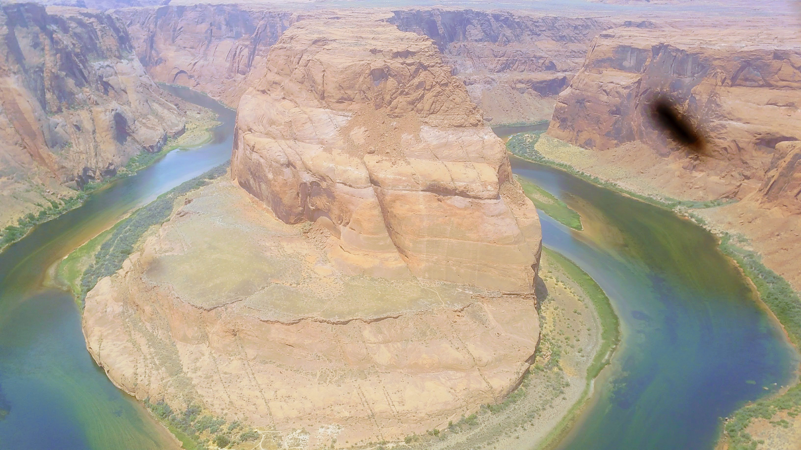The 'schmutz' on my camera lens grows by the day.
From there, it was north into Grand Staircase-Escalante National Monument, a massive swath of desert wilderness in southern Utah. It's named for the steps of colored cliffs that rise from north Arizona into central Utah, a breathtaking sight to behold. We did some hiking in dried riverbeds and tight canyons on our way across the wilderness, spending an evening in some blessedly-cool shade. We plan on returning to the Monument in a few days, to explore its slot canyons and other beauties.
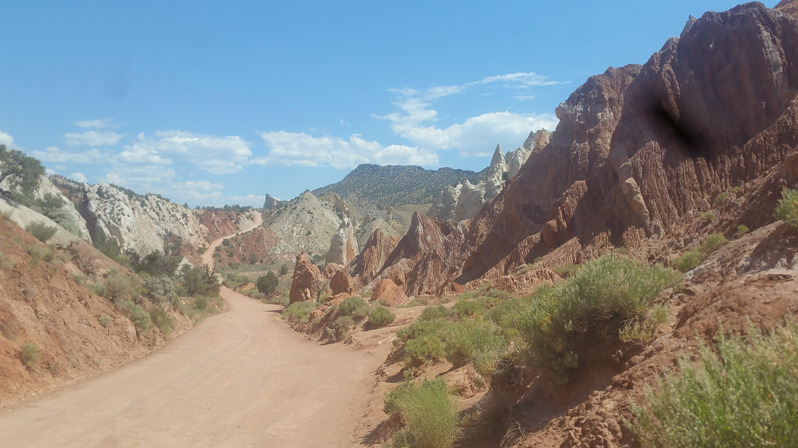
Grosvenor's Arch
Today we drove to Bryce Canyon National Park, where we will be hiking for the next few days. Bryce is, as one fellow visitor described it, the "frilly" Utah NP, also evidenced by its paved hiking trails and gift shops aplenty. Despite that, there are some unbelievable rock formations (referred to as "Hoodoos") everywhere, and we're excited to see the weirder ones off the beaten path. From here, we're headed north to explore the Pando Forest, a massive grove of Aspen trees in central Utah. Then it's Capitol Reef National Park, Canyonlands National Park, Arches National Park, and into Colorado!!
In longer-term news, I recently confirmed my working with the TKO Reserve crew in the fall! I'm very excited to return to that enchanted little farm, and my mom and I may even be making a roadtrip out of my heading out there... stoked!!
Thanks for reading, stay tuned for more!
Mileage: 24600
Weather: Hot, breezy, 95F
Currently listening to: RHCP